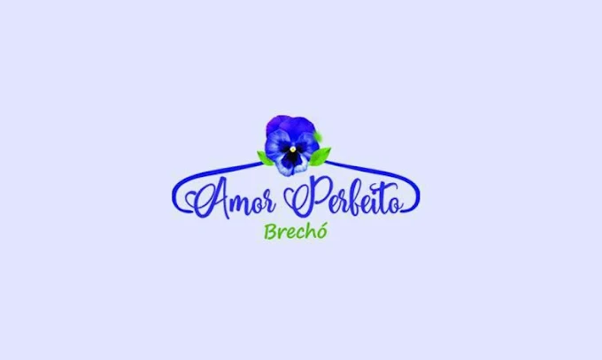
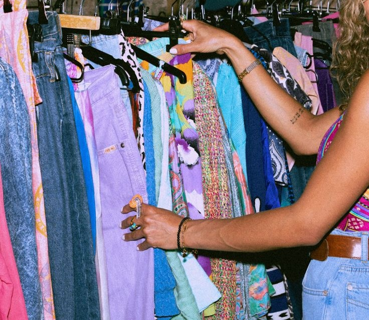

Brechó Amor
ENCONTRE A SUSTENTABILIDADE QUE A SUA MODA PRECISA

📍 Clique em um ponto ou pesquise acima
Vivemos cercados por roupas. Em média, cada pessoa consome 20 novas peças por ano — mas você já parou para pensar no caminho que uma simples camiseta percorre até chegar ao seu guarda-roupa? E, mais importante: para onde ela vai depois que é descartada?
Os números assustam. De acordo com a Ellen MacArthur Foundation, a produção global de roupas dobrou nos últimos 15 anos, enquanto o tempo de uso de cada peça caiu 36% no mesmo período. Esse fenômeno tem nome: fast fashion — a moda rápida, descartável e de baixo custo que dita as regras do setor e impõe um ritmo insustentável ao planeta.
A cadeia produtiva têxtil é uma das mais agressivas ao meio ambiente. Começa no cultivo do algodão — monocultura que consome enormes quantidades de água e agrotóxicos, acelerando a erosão do solo. Segue pelos processos de tingimento e estamparia, que despejam efluentes químicos nos corpos d'água, muitas vezes sem o tratamento adequado, como alerta a pesquisadora Lilyan Berlim em entrevista ao portal Direto ao Assunto (UNESP, 2023).
A situação se agrava com o uso predominante de fibras sintéticas, como o poliéster. Além de derivadas de petróleo, essas roupas liberam microplásticos a cada lavagem — partículas que chegam aos oceanos, são ingeridas por animais marinhos e entram na cadeia alimentar humana. Estima-se que 1,2 bilhão de toneladas de CO₂ sejam emitidas anualmente pela indústria da moda, contribuindo significativamente para o aquecimento global.
E o que acontece no fim da vida dessas roupas? Uma imagem dramática ilustra a resposta: o Deserto do Atacama, no Chile, transformou-se em um imenso cemitério têxtil. Cerca de 60 mil toneladas de roupas são enviadas para a região todos os anos — a maioria proveniente de países consumidores. Mais da metade acaba em aterros ou é incinerada a céu aberto, gerando fumaça tóxica e um passivo ambiental de enormes proporções.
Entre 2010 e 2022, o Brasil registrou centenas de casos de trabalhadores submetidos a condições análogas à escravidão — um número que, por si só, já seria alarmante, mas que representa apenas a ponta de um iceberg muito mais profundo. Os dados oficiais da Secretaria de Inspeção do Trabalho (SIT, 2022) revelam uma realidade dura: a maioria dessas ocorrências se concentrou nas indústrias têxtil e de confecção, setores que movimentam bilhões de reais por ano, mas que operam, em grande parte, às custas da dignidade humana.
Nós criamos este projeto pra facilitar a vida de quem ama garimpar e quer consumir de forma mais consciente em Salto. Para isso, reunimos a localização dos brechós da cidade em um só lugar, pra mostrar que dá sim pra se vestir bem, economizar e ainda ajudar o planeta.
A ideia surgiu porque sentimos falta disso por aqui. Os brechós existem, mas nem sempre são fáceis de encontrar ou têm a visibilidade que merecem. Então pensamos: por que não mudar isso?
Como desenvolvedoras (e frequentadoras de brechó), quisemos usar a tecnologia pra dar destaque a esses espaços, apoiar o comércio local e incentivar uma moda mais sustentável aqui em Salto. Também fomos incentivadas e apoiadas pelo IFSP campus Salto (instituto em que estudamos), graças a matéria de Projeto Integrador.